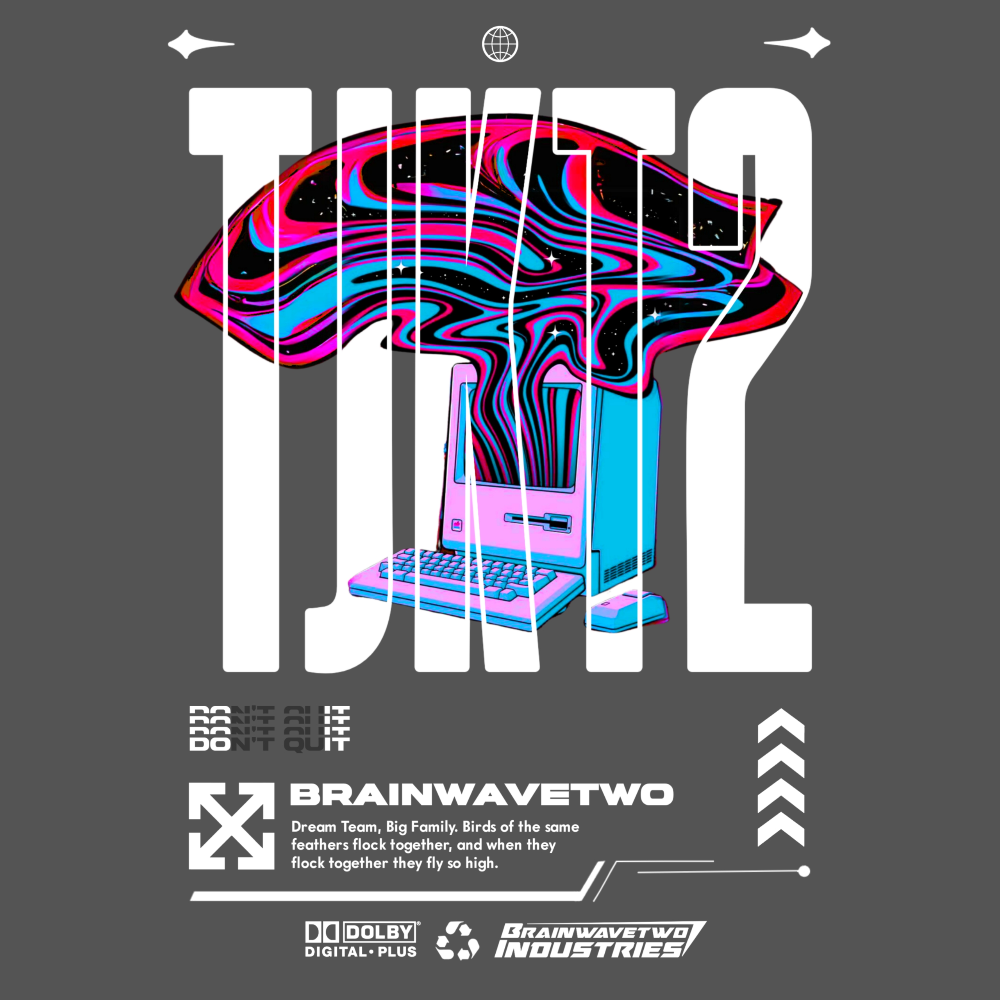

About Me
Nama saya Muhammad Ramdan Virdiansyah, siswa jurusan Teknik Komputer dan Jaringan (TKJ) di SMKN 1 Palasah yang memiliki rasa keingintahuan dan minat yang kuat dalam bidang teknologi, khususnya editing dan pemrograman. Sejak SMP, saya mulai menekuni editing video secara otodidak, dan kini sudah mulai terbiasa menggunakan software seperti Adobe Premiere Pro dan DaVinci Resolve.
Saat SMK, saya mulai mendalami pemrograman dan Internet of Things (IoT) melalui ekstrakurikuler, serta sempat mengerjakan proyek Smart Home secara mandiri. Terkait pengalaman lomba, saya juga pernah mengikuti lomba IoT di PPTIK ITB dan menjadi editor dalam tim lomba film pendek FLS2N 2025, di mana tim kami meraih juara 2 di lomba film pendek tingkat kabupaten tersebut.
Works & Stories
